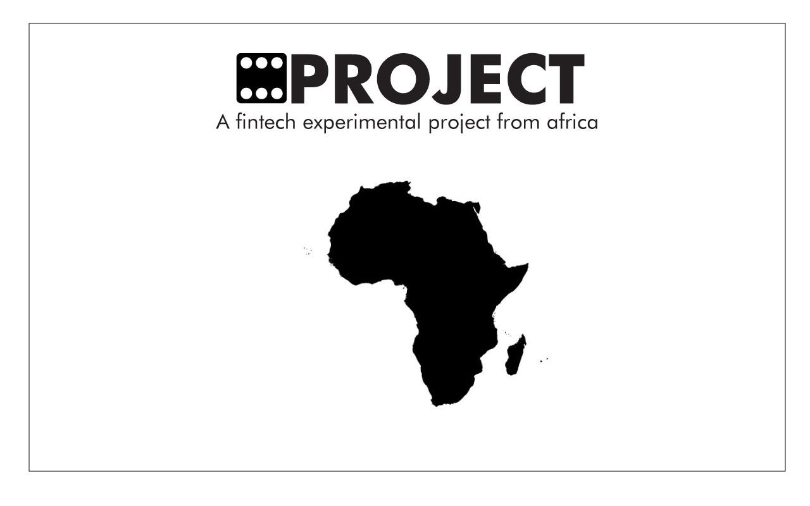

The dice project
A fintech experimental project from Africa


This project is about Africa it may likely start from my born country and I hope and expect it to spread around Africa. It involves games and young African women and men and as we believe in a strong futuristic African continent, we will work hard to make it useful to these young African women and men. A project that will not only provide them financial power but also connect them and make them collaborate to achieve their goals, making them be worth financially and culturally while fuelling the economy of this continent and building it.
This is about gaming so game theory matters for it to be well designed. We don't want it to be a Zero-sum game for example. We want it to be collaborative each participant gaining rewards and status. This is something difficult to achieve with Dice because if each of us rolls a dice, some may have 6 others 4 and so one even if every one of us had the same likelihood to have a SIX. The dice project we are trying to implement should be designed as that those like me who have 1 will be courageous and fair play enough to know that that’s our peers who have SIX today maybe tomorrow we will have SIX and we will share our status and reward with those who have less than that.
The domino project was a project about book publishing experimented by Seth Godin. I thought It was still possible to restart and update this project and started dive into the useful blogs post and resources that this great entrepreneur was sharing and still share with the world. This sincerely leads to Book Dojo this experiment publishing startup I am running now. But as someone who is interested in fintech because banking was the first industry where I started my short career and got interested in trading and all technologies about financials market. I had spent years working on trading systems for market-making and high-frequency trading and got interesting working trading highly performant trading algorithms and innovative data features for financial AI. These while being so far from Wallstreet, the City (London), Frankfurt, and Paris. To say we really live in a connected world and distance is really disrupted by the internet and knowledge widespread.
Every time I work on another project this fintech mindset always tries to fit into this project I am working on. That’s why working on this publishing startup and reading the domino project made me being interested in domino, the game, then in designing board games what’s finally led me to this project called The Dice project that maybe will be an African fintech startup.
We will see how it will end but just started the branding and ideating about the marketing because
“disruptive technology should be framed as a marketing challenge, not a technological one.” said Clayton M. Christensen, god bless him
PS: if this project succeeds it will likely participate in the success and expansion of the Personal Computer Museum of Senegal